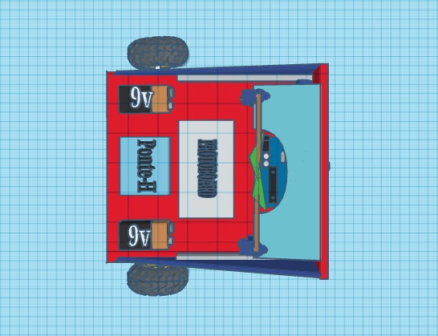
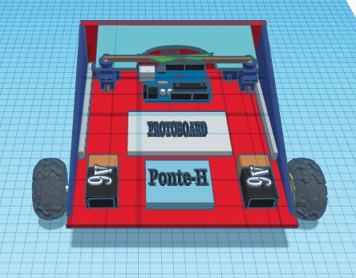
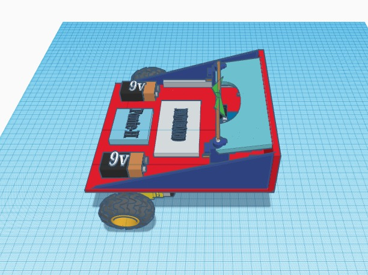
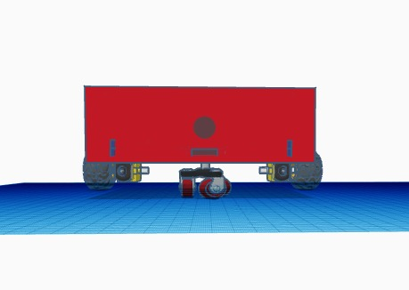
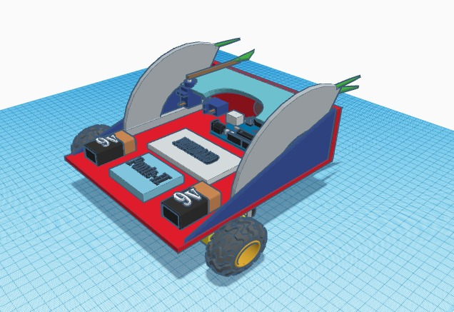
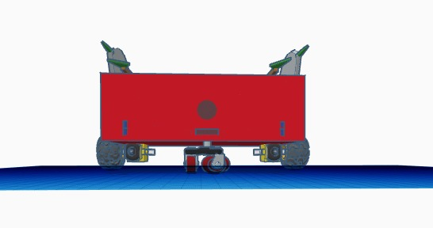
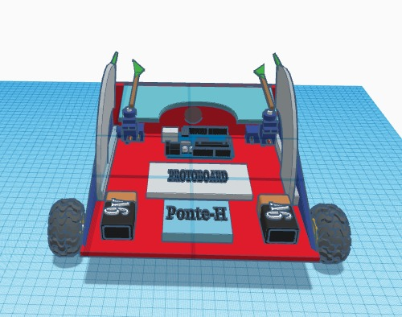

ATOM
ATOM








A nossa inspiração foi feita no filme “Gigantes de aço”, o filme é baseado em uma luta de Robôs, onde os personagens são um ex lutador de box, seu filho e o Atom, o Robô. Nós nos baseamos nesse filme pela mensagem por trás dele: o mais importante não é ganhar, e sim a relação construída com a equipe. As dificuldades e as conquistas em grupo. Como estamos passando por uma pandemia e não conseguimos socializar o time, o projeto do Robô eh uma forma de, mesmo a distância, trabalharmos em equipe e conquistar nossos desafios.
A nossa estratégia será colocar um sensor de fim de curso na parte frontal e traseira do Robô. Com a existência do sensor na parte traseira, ao iniciar a batalha, o Robô se direcionará contra a parede na parte de trás, com objetivo de acionar suas armas e atacar seu oponente; que teoricamente não tera acionado sua arma ainda. Caso não conseguirmos estourar o balão adversário neste primeiro ataque, ainda teremos o sensor alocado na parte frontal, que com sorte, será ativado antes do que o sensor oponente..